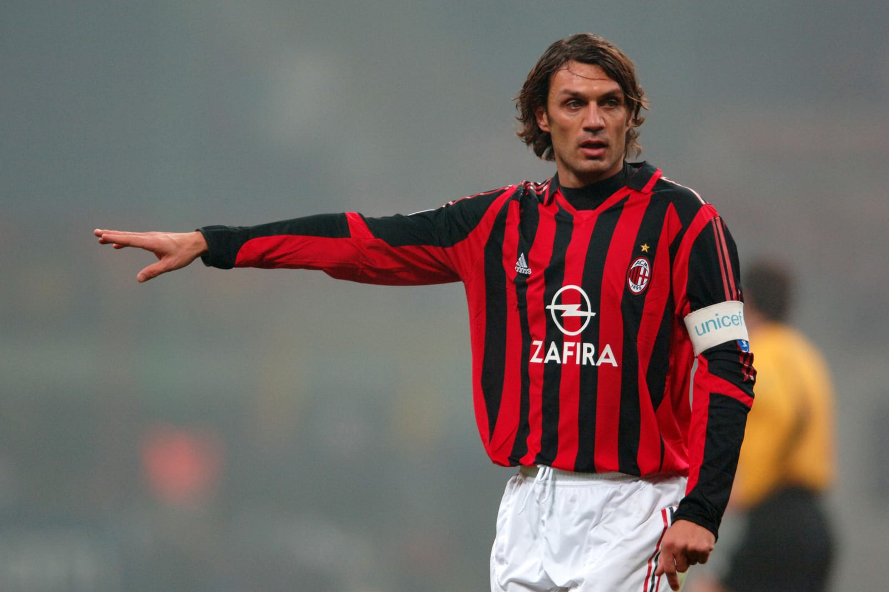

Centreback
Il Capitano
Maldini is the gold standard for defending. Interceptions, standing tackles, and positioning make him near-unbeatable at the back.
Heading against tall strikers needs support.